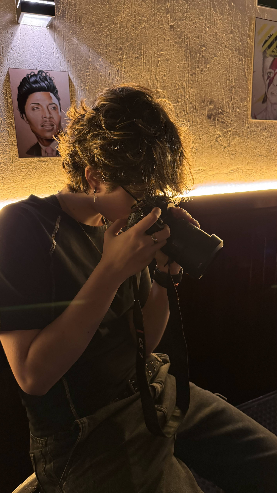

"If you're lost in the darkness look for the light"

Estudante de Cinema e Audiovisual na ESPM, com passagens pela Academia Internacional de Cinema (AIC). Meu foco está no set e na pós-produção: atuo como fotógrafa freelancer, cobrindo desde a energia dos campos de futebol até o rigor técnico do teatro.
Desde pequena sempre fui apaixonada por movimento, emoções e arte, com isso veio a vontade de poder eternizar esses momentos. Então, comecei a fotografar tudo que me fascinava e hoje em dia espero ajudar pessoas a capturar suas memórias em fotos.